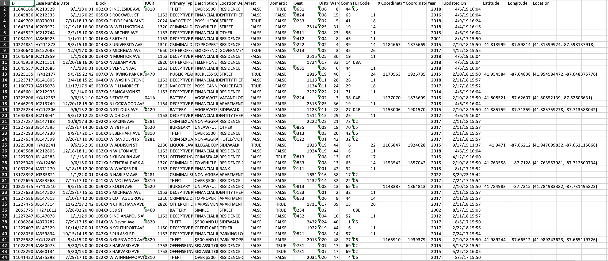

The Chicago Crime dataset contains reported crime that occurred from 2001 to present. It was extracted from the Chicago Police Department's CLEAR (Citizen Law Enforcement Analysis and Reporting) system. The dataset contains more than 1 million crimes reported from 2001 including many details about the Crimes with its case number, a brief description, when, where, and how it happened, as well as if the offender was arrested or not.
The following interactive scatter plot visualizes Chicago crime data, providing insights into the monthly crime trends in different regions of Chicago over the years.
Use the slider below the chart to interact and select the year.
The following visualization is an interactive multi-view area chart that shows the crime count over any period that the user selects.
You can select the timeframe in the bottom graph for which you want to see the visualization in the upper graph. The time frame can be day/days, week/weeks, month/months or year/years.
The following visualization is an interactive bar chart that shows the crime count for the top 10 crimes for the selected ward in the selected year.
Select the Ward and/or Year from the dropdowns to see the visualization. You can also hover over the bars in the chart to see the Primary Type and exact Count.
The second visualization shows the distribution of crimes by hour of the day for the crime type selected in the chart by clicking on the bar.
The following interactive visualization shows the top 5 crime locations by year with their counts.
Select the Year from following buttons to view the top 5 crime locations for that year and the Number of Crime Occurences in each location. You can also hover over the bars in the chart to see the Location and exact Count.
The following visualization provides a comprehensive view of arrests in Chicago, combining geographic information with detailed data about each arrest.
You can select the year from dropdown to see the chicago map plot for that year. You can hover over the map to see the Type and Description of crime for each point on the graph.